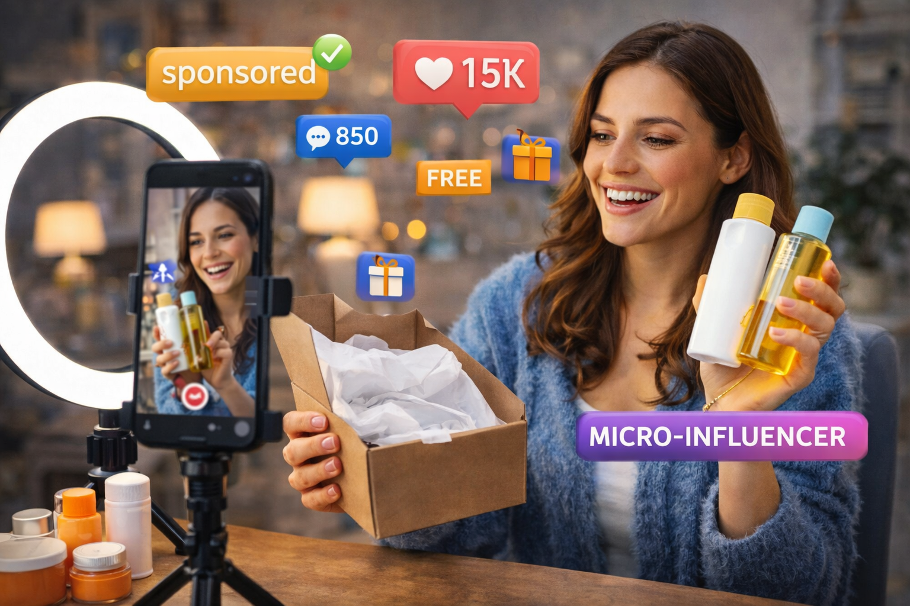

Marcas enviam produtos para micro influenciadores o tempo todo: custo menor que macro, audiência mais engajada e nicho bem definido. O que elas precisam é achar você. Quando uma marca procura influenciadores, ela compara vários perfis; quem já tem métricas organizadas, Media Kit e contato visível costuma ser escolhido primeiro.

Criadores que têm métricas organizadas e aparecem em vitrines de influenciadores costumam receber mais propostas de marcas.
Por que micro recebe tanto produto
Orçamento de marca pequena ou média, foco em engajamento (micro costuma ter ER melhor que macro) e público segmentado. Uma marca de skincare quer quem fala de beleza para quem consome; não precisa de 500k seguidores. Perfis do mesmo tamanho podem ter resultados muito diferentes: quem está em vitrines e com cidade/contato preenchidos aparece na busca.
O que preparar
- Contato visível — bio, e-mail ou link para proposta.
- Resumo dos números — de preferência um Media Kit em PDF.
- Cadastro em vitrines — onde marcas filtram por nicho e região.
- Resposta rápida — 24–48h; marcas têm prazos (como receber presentes).
- Perfil ativo — poste com certa frequência e tenha números à mão.
Marcas analisam dezenas de perfis; quem já manda tudo organizado leva vantagem.
Como a plataforma ajuda
No Busca Influencer você gera relatório (métricas, ER, estimativa de valor) e Media Kit em PDF. Ao ativar seu cadastro (cidade, contato, tipo de conteúdo), você entra na vitrine. Marcas filtram por faixa de seguidores, região e nicho — e te encontram. É o fluxo que micro influenciadores usam para receber mais produtos e primeiras parcerias.
Conclusão
Ganhar produtos sendo micro é: perfil e contato claros, métricas organizadas (relatório ou Media Kit) e presença na vitrine com cadastro ativado. Muitos micro se surpreendem quando veem que já estão prontos — só precisam aparecer quando a marca busca.
Veja como marcas enxergam seu perfil e entre na vitrine
Cadastre seu Instagram no Busca Influencer: relatório e vitrine onde marcas buscam micro por região e nicho.
Depois, ative e apareça para marcas.